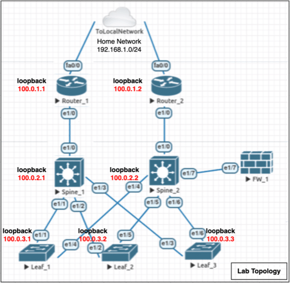
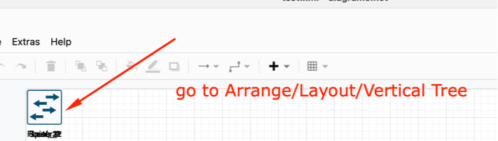
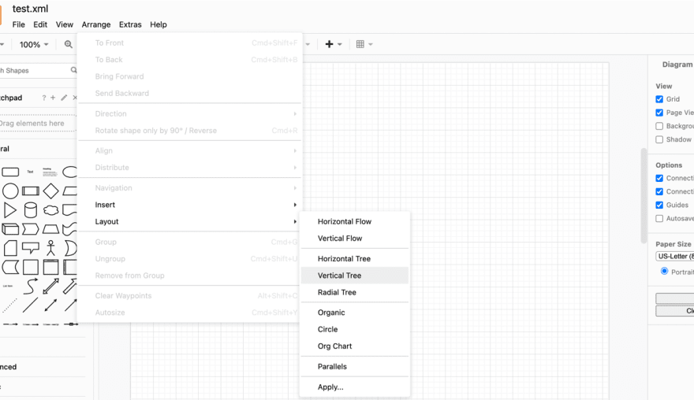
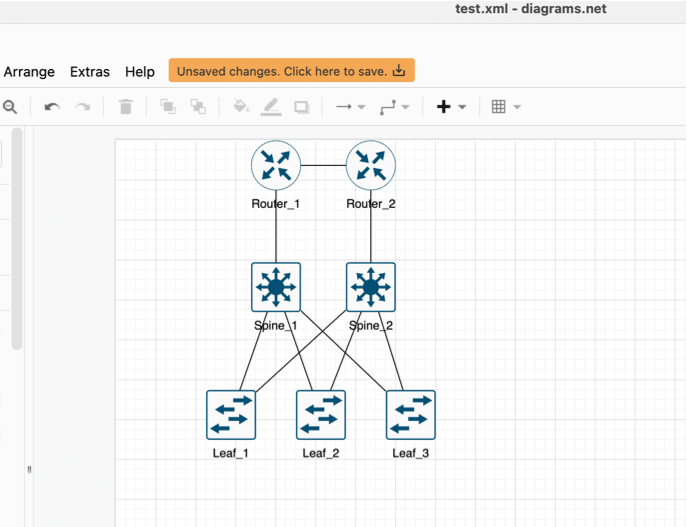

Automating DrawIO network topology using Python
Table Of Contents
Intro
In this blog , we are going to show how to use the draw_network_plot python library to generate a DrawIO Network topology easily instead of manually drawing them yourself . DrawIO is widely used as a free alternative to Microsoft’s Visio to draw network topologies. I will be using Netmiko and CDP to acquire the data needed for the plot for the devices themselves , but this part won’t be the focus of the article . Focus of the article is how to use the “drawio_network_plot” library" to generate the DrawIO file .
Library setup
Make sure to have Python 3.7 and above , then install the library using :
$ pip install drawio_network_plot
Lab setup
Lab is done on EVE-NG using Cisco’s 7200VXR image to create the topology , the whole topology is L3 with Loopback so the Python CentOS server would be able to ssh to each device . EVE-NG Topology Diagram (Non-generated):

Configuration and Script
You can find both the below script and all the EVE-NG Cisco devices configuration in the following Github Link : drawio_network_plot/examples/cisco_gather_cdp_and_plot
from netmiko import ConnectHandler
import re
from drawio_network_plot.drawio_network_plot import NetPlot
# ----------------- Getting live CDP Neigbors to gather links endpoints ---------------------------
def retieve_lldp_neigbor_hostname(devices_list):
list_of_cdp_neighborship = []
for device in devices_list:
device_dictionary = {
'device_type': 'cisco_ios',
'host': device['ip_address'],
'username': 'automation',
'password' : '1234567',
}
net_connect = ConnectHandler(**device_dictionary)
output = net_connect.send_command("show cdp neighbor")
lines_list = output.splitlines()
for line in lines_list:
try:
# regex to search the name of the device before the domain ID ".default" , then removing the word ".default" from the string
link = {
'sourceNodeID' : device['nodeName'],
'destinationNodeID' : re.search('\S+\.default',line).group().replace('.default','')
}
# checking for duplication before adding new link :
if {'sourceNodeID':link['destinationNodeID'],'destinationNodeID':link['sourceNodeID']} not in list_of_cdp_neighborship:
list_of_cdp_neighborship.append(link)
except:
continue
net_connect.disconnect()
return list_of_cdp_neighborship
def main():
# Lab Devices , must have the device type for the plotting library to work
devices = [
{'nodeName':'Router_1','ip_address':'100.0.1.1','nodeType':'router','nodeDescription':'NA'},
{'nodeName':'Router_2','ip_address':'100.0.1.2','nodeType':'router','nodeDescription':'NA'},
{'nodeName':'Spine_1','ip_address':'100.0.2.1','nodeType':'l3_switch','nodeDescription':'NA'},
{'nodeName':'Spine_2','ip_address':'100.0.2.2','nodeType':'l3_switch','nodeDescription':'NA'},
{'nodeName':'Leaf_1','ip_address':'100.0.3.1','nodeType':'l2_switch','nodeDescription':'NA'},
{'nodeName':'Leaf_2','ip_address':'100.0.3.2','nodeType':'l2_switch','nodeDescription':'NA'},
{'nodeName':'Leaf_3','ip_address':'100.0.3.3','nodeType':'l2_switch','nodeDescription':'NA'}
]
# Getting list of links for each device
list_of_cdp_neighborship = retieve_lldp_neigbor_hostname(devices)
for peering in list_of_cdp_neighborship:
print(peering)
# ------------------------------------------------------------------------------------------------------
# ------------------------------------------------------------------------------------------------------
# ----------------- Main Part : using library to generate XML DrawIIO format ---------------------------
# Using the Plot library
x = NetPlot()
x.addNodeList(devices)
x.addLinkList(list_of_cdp_neighborship)
print(x.display_xml())
# ------------------------------------------------------------------------------------------------------
# ------------------------------------------------------------------------------------------------------
# ------------------------------------------------------------------------------------------------------
if __name__ == "__main__":
main()
Library Options
Remember , you can gather the data however you like , this was just a simple demonstration of what you can do , main code to remember is the plotting part :
# please adhere to the naming scheme in the variables
device_list = [{'nodeName' : 'TOR_1','nodeType' : 'l2_switch','nodeDescription' : 'Leaf Switch 01'}]
x = NetPlot()
# **IMPORTANT NOTE :**---> Make sure that the sourceNode in the connection is the higher level device and that connections are not replicated , this way when you use the DrawIO automatic layout , it would create the diagram hierarchy the correct way
connections_list = [{'sourceNodeID' : 'Router_1','destinationNodeID' : 'Core_switch_1'}]
# Adding using list all at once
x.addNodeList(device_list)
x.addLinkList(connections_list)
# Adding node by node and link by link
x.addNode(nodeName='Router_18',nodeType='router')
x.addLink('Router_17','Router_18')
# --- Output ---
# You can print the XML to the Stdout
print(x.display_xml())
# Or You can also directly generate an XML file using the built in function :
# x.exportXML('examples/output.xml')
Generated output will be collapsed in one point , you will have to choose the Layout you would like in DrawIO after opening the file like showed as follows :
Generated Topology
1- Open generated XML file in DrawIO

2- go to Arrange/Layout/Vertical Tree

3- Final Result

For any comment on the pip package , feature addition or any comment , please share your suggestions as this is my 1st PIP library , and divinely its not perfect .
Thanks …